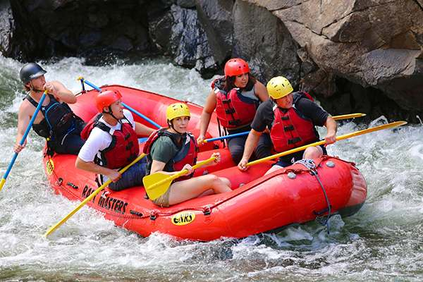

Rafting Aventura
Para quem gosta de emoção e aventura, o Rafting Aventura é uma excelente escolha. Durante o percurso, os participantes enfrentam as águas do rio em equipe, aprendendo a trabalhar juntos enquanto aproveitam uma experiência divertida e emocionante.
O passeio é acompanhado por instrutores preparados para orientar o grupo durante todo o percurso.